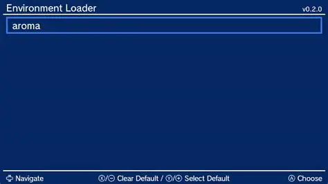
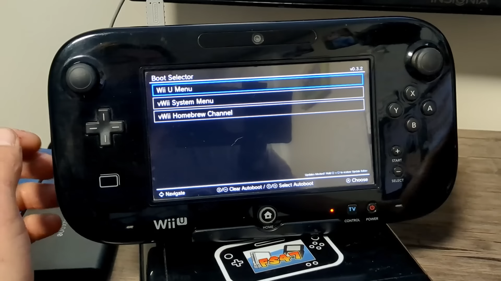

If your Wii U is on, turn it off and insert your USB.
Then, turn on your Wii U and open the internet browser.
Once in the internet browser, go to wafel.xyz and hit "launch" then hit "launch" again and wait for it to load.
If it says "No SD card detected." select "[Use USB]".
When it says "Remove ALL SD AND USB Storage devices NOW!", remove your USB from the console, but this time while removing it, keep the console on, then push OK.
Then when it says "Plug in ONLY the USB device you want to work with. Plugging in other devices may lead to DATA LOSS!", plug in the USB you want to use to mod your console.
When it asks if you only want to use it for homebrew, I reccomend doing [Homebrew + Games]
If you clicked [Homebrew + Games], then I reccomend repartitioning it to be 50/50
When it asks if you want to "download Aroma by Maschell and the HB Appstore" select [Download]
then push OK when it finishes
When it asks about Stroopwafel, select yes, and if it fails, just select retry until it works
When it asks "Do you want to proceed with install?" select yes
Just wait a bit until it restarts.
Once it restarts, you should be in this blue screen with the text "Environment Loader", it should look like the image below. This is normal.

Once in Environment Loader, push Y/+ on "aroma", then push A on "aroma" you should then see the screen on the gamepad in the photo below
